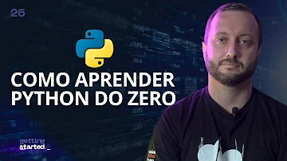

Geração Tech Unimed - BH - Ciência de Dados DigitalinnovationOne 2,1 mil visualizações • Transmitido há 2 dias
Machine Learning Avançado - Fast Track DigitalinnovationOne 1,7 mil visualizações • Transmitido há 4 dias
 Como aprender a programar Python do ZERO DigitalinnovationOne 711 visualizações • Transmitido há 6 dias
Geração Tech Unimed - BH - Ciência de Dados DigitalinnovationOne 2,1 mil visualizações • Transmitido há 2 dias
Machine Learning Avançado - Fast Track DigitalinnovationOne 1,7 mil visualizações • Transmitido há 4 dias